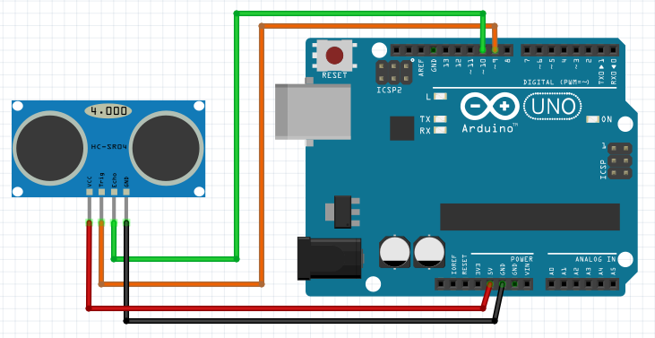

Praktik Sensor Jarak Ultrasonik
Pengukuran Jarak (cm) & Sistem Radar Parkir
Pelajari cara sensor HC-SR04 memancarkan gelombang ultrasonik untuk menghitung jarak objek secara akurat, serta memprogram indikator peringatan jarak bertingkat dengan 3 LED dan Alarm Buzzer.
Skema Rangkaian
Skema Misi 1

Visual Radar
AMAN
Simulasi Jarak Halangan:
30 cm
Pilih Misi Praktikum
2 Misi Utama
Misi 1: Pembacaan Jarak Dasar
Membaca pantulan pulsa ultrasonik dari pin ECHO dan mengonversikan waktunya menjadi nilai jarak (cm) ke Serial Monitor.
Arduino Uno
sketch_misi1_ultrasonik_dasar.ino
Ready | TRIG: PIN 9 | ECHO: PIN 10
Arduino Uno on COM3
Serial Monitor (Simulasi Ultrasonik)
[Serial Monitor Siap. Klik "Upload & Run" untuk memulai]
Status: Connected @ 9600 baud